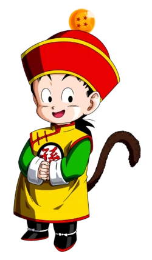
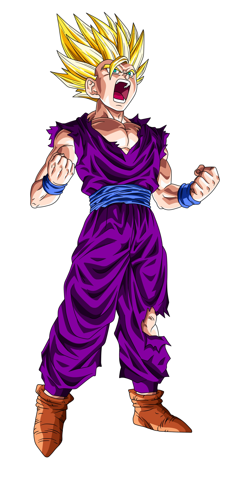
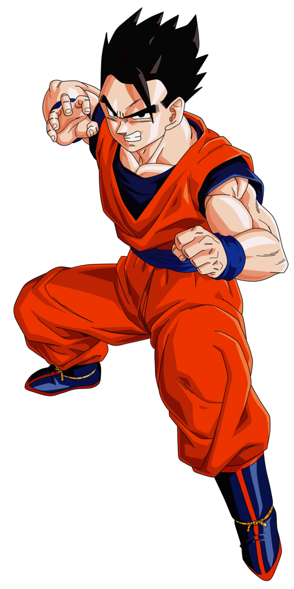

Son Goku, de son vrai nom Kakarot, est le principal héros du manga. Le personnage s'inspire de Sun Wukong et Superman, en raison de son histoire d'origine très similaire. Vivant seul dans les montagnes loin de la ville, il hérite d'une boule à quatre étoiles connue sous le nom de Dragon Ball, qu'il garde comme souvenir de son grand-père Son Gohan. Il se lie d'amitié avec une adolescente nommée Bulma. Ensemble, ils se lancent dans la quête des sept Dragon Balls qui, une fois rassemblées, invoquent le dragon Shenron qui exauce les vœux. Au cours de ses aventures, il trouve de nouveaux amis qui le suivent dans son voyage. Au fur et à mesure que Goku grandit, il sauve la Terre et l'univers à l'abri des méchants. La réception critique de Goku a été largement positive et il est souvent considéré comme l'un des plus grands personnages de mangas et d'animés de tous les temps.
Vegeta recherche les Dragon Balls qui réalise des vœux pour obtenir l'immortalité. Aux côtés de Goku, Gohan, Bulma, Krillin et Piccolo, il est un des personnages ayant reçu le plus de développement. Son personnage évolue de méchant à anti-héros et devient un héros au cours de la série. Il est l'un des personnages les plus populaires de la franchise Dragon Ball, et sa première confrontation avec Goku est considérée comme l'une des batailles les plus emblématiques du manga et de l'anime. Vegeta est extrêmement vaniteux et fier, faisant constamment référence à son héritage et à son statut de prince des Saiyans tout au long de la série ; il pense qu'il devrait être considéré comme le combattant le plus puissant de l'univers et devient obsédé par l'idée de dépasser Goku après l'avoir combattu. Végéta s'unit à contrecœur avec le groupe de Goku, pour contrecarrer des menaces plus grandes pour l'univers telles que Freezer, Cell et Majin Boo.
  Son Gohan est un Saiyan métis et l'un des personnages les plus importants de la série Dragon Ball. Il est le fils aîné de Goku et de sa femme Chi-Chi, le neveu aîné de Raditz, le frère aîné de Goten, le mari de Videl et père de Pan. Il porte le nom du grand-père adoptif de Goku, Gohan. Contrairement à son père, Gohan manque de passion pour le combat (bien qu'il possède un fort pouvoir en lui) et préfère le faire uniquement lorsque ses proches sont menacés.
Bardack était le père de Son Gokû et de Raditz ainsi que le mari de Gine. Il est l'un des premiers Saiyans à être exterminé par Freezer lors du génocide.
Son Gohan est le grand-père adoptif de Son Gokû, C'est lui qui lui apprendra les bases des arts martiaux. Il meurt avant la rencontre entre le jeune Gokû et Bulma, tué par accident par son petit fils transformé en Singe Géant.
Bulma est né le 19 août, elle apparaît pour la première fois le 20 novembre 1984 dans le premier épisode de Dragon Ball. Elle y fait la rencontre du héros Goku et le recrute comme garde du corps pour voyager et partir à la quête des Dragon Balls en vue de réaliser ses vœux.Elle se mariera plus tard avec le Prince Vegeta, qui était d’abord son ennemi, mais qui deviendra plus tard son mari. Elle aura un fils avec lui, nommé Trunks, et une petite fille du nom de Bra.
Chichi est la fille de Gyûmaô, la femme de Son Gokû et la mère de Son Gohan et Son Goten.
Trunks est le fils de Vegeta et de Bulma.Il a la particularité d'exister deux fois dans l'histoire. En effet, le premier Trunks qui apparaît au début de la Saga des humains artificiels vient du futur et est retourné dans le passé dans une autre chronologie grâce à une Time Machine conçue par Bulma, sa mère. Ce n'est que quelques années plus tard qu'il naît réellement.
Son Goten est le fils de Chichi et de Son Gokû, et le frère cadet de Son Gohan.Il perdit son match final contre Trunks au 25ème Tenka Ichi Budōkai.